My research studies how information frictions in financial markets interact with managerial decision-making and the economic consequences of these interactions.
Information is central to capital allocation and the functioning of financial markets. Yet firm managers, who serve as primary information providers, often have incentives to strategically withhold or misreport information. My research seeks to understand managers’ strategic disclosure incentives through two interrelated themes: the dynamics of managers’ strategic disclosure decisions, and the incentive effects of information processing. As an extension, I also examine how institutional factors contribute to misreporting and agency problems.
Solo authored · 2021 · Management Science 67(6), 3429–3446
This paper examines whether investor learning about profitability leads to persistence in disclosure decisions. A repeated single-period model shows that persistent investor beliefs about profitability lead to persistent disclosure decisions. Using earnings forecast data, I structurally estimate the model and perform several counterfactual analyses. When investors are assumed to know profitability, the persistence of management forecast decisions significantly declines by 17%–27%. About 24% of firms would have disclosed differently, resulting in a 3.9% net change in the amount of information provided to the capital market.
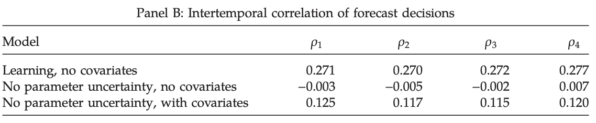
Panel B examines the intertemporal correlation of forecast decisions for three cases. The first row represents the case in which investors do not know profitability and disclosure cost does not depend on the observed covariates. The second row corresponds to the case in which investors know profitability and the disclosure cost does not depend on the observed covariates. The third row examines the case in which investors know profitability and the disclosure cost depends on the observed covariates. Columns (1)–(4) report the intertemporal correlation of the forecast decisions, measured as the autoregressive coefficients of the current quarter’s forecast decision on each of the previous four quarters’ forecast decisions. The simulation is conditional on reported earnings and the covariates from the data and is performed 500 times for each case. The average is reported.
With Edwige Cheynel and Davide Cianciaruso · 2024 · Journal of Accounting Research 62(3), 833–876
Using misstatement data, we find that the distribution of detected fraud features a heavy tail. We propose a theoretical mechanism that explains the relatively high frequency of extreme frauds. In our dynamic model, a manager manipulates earnings for personal gain while a monitor of uncertain quality can detect fraud and punish the manager. As the monitor fails to detect fraud, the manager’s learning leads to a slippery slope in which the size of frauds grows steeply, and to a power law for detected fraud. Empirical analyses corroborate the slippery slope and the learning channel.
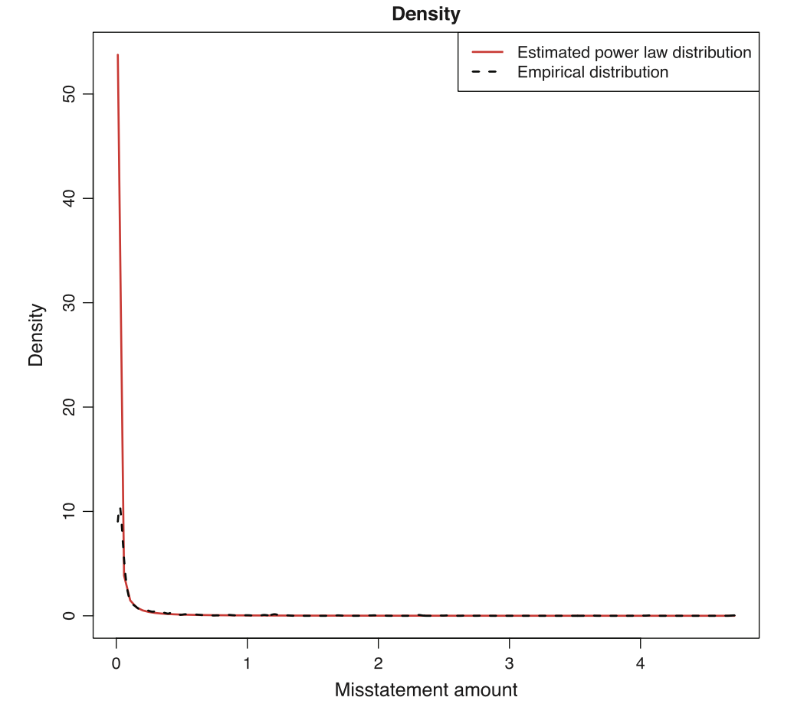
Fig. 1.—Empirical PDF and fitted power law PDF. This figure plots the estimated power law PDF for restatement amounts (solid line) against the empirical PDF (dashed line) based on 1,173 unique restatement events from Audit Analytics Restatement between 2005 and 2021. The restatement amount is the cumulative amount of misstatement of earnings for a restatement event. The sample consists of restatement events that likely correct intentional manipulations. These events are identified using (i) ex post measures, namely, fraud or external or internal investigations (i.e., Securities Exchange Commission [SEC] or board of director investigations) (Hennes, Leone, and Miller [2008]) and (ii) ex ante measures, namely, core account classifications (Palmrose, Richardson, and Scholz [2004], Zakolyukina [2018]). We further keep annual misstatements that increase net income and restatements for which the beginning total assets exceed $1 million. All restatement amounts are scaled by the total assets before the restatement beginning date.
With Edwige Cheynel · 2024 · Management Science 70(8), 5557–5585
We estimate an infinite-horizon dynamic oligopoly model of audit firm tenure and misstatements and evaluate a policy counterfactual involving mandatory audit firm rotation. Longer tenure lowers the cost of producing audits, increasing audit quality and reducing audit fees. Mandatory rotation leads to large increases in auditor switches and switching costs, while misstatement rates increase because audit firms endogenously lower audit quality and newly hired audit firms have lower quality.
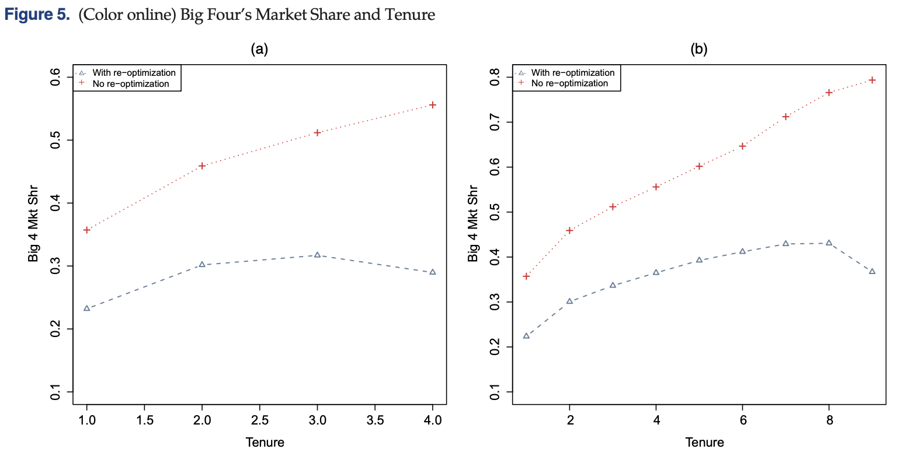
(a) Five-year rotation. (b) Ten-year rotation. This figure plots the relation between tenure and the probability of switching under 5- and 10-year rotation rules in the left and right panels, respectively. The dash-triangle line represents the Big Four’s market share under mandatory audit firm rotation. The dotted-plus line represents the Big Four’s market share in the case of no client and audit firm reoptimization. The horizontal axis is audit firm tenure. The vertical axis is the Big Four’s market share. The figure excludes the rotation year in which the incumbent does not offer audit services.
With Mirko Heinle, Chongho Kim, and Daniel Taylor · 2025 · Journal of Accounting and Economics 80(1), 101768
This paper shows theoretically and empirically that the decision to disclose a short-term earnings forecast can reveal managers’ private information about long-term performance. The decision predicts long-term performance for up to three years, and the relation strengthens when current-period performance is poor, managers have longer horizons, and competitive threats are lower.
With Mark Maffett and Delphine Samuels · 2025 · The Accounting Review 100(6), 197–224
We examine how the SEC’s 2014 Municipalities Continuing Disclosure Cooperation initiative affects disclosure compliance in the municipal bond market. After the initiative, official statements were less likely to contain false claims about past compliance, but we observe a 9% decrease in issuers’ continuing-disclosure compliance relative to a control group. The initiative may have exacerbated noncompliance by exposing weaknesses in the existing regulatory regime.
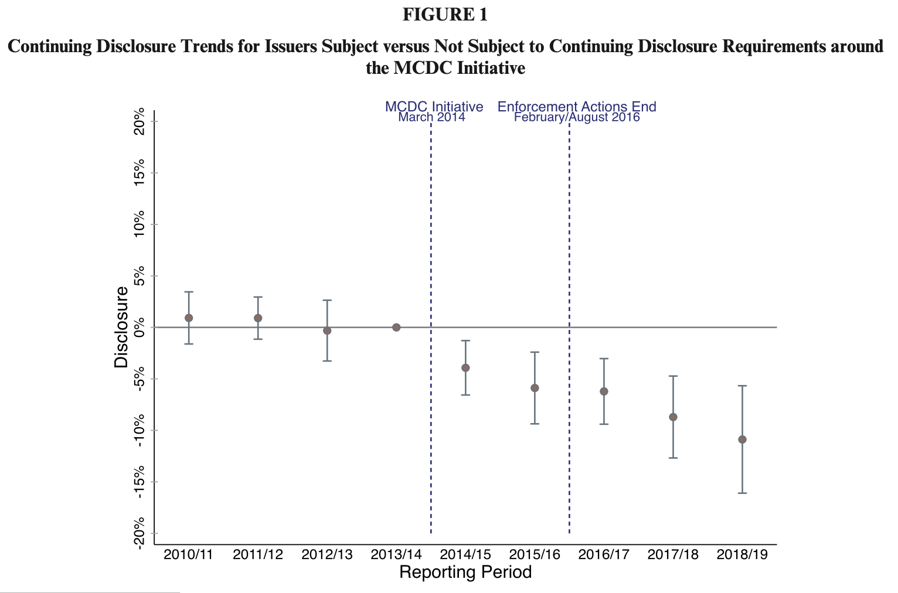
This figure reports coefficients and 95 percent confidence intervals for OLS regressions estimating the effect of the MCDC initiative on the likelihood of providing continuing disclosure for municipal bond issuers subject versus not subject to continuing disclosure requirements. Each reporting period runs from March through February (e.g., reporting period 2014/15 runs from March 1, 2014 through February 28, 2015).
With Heng (Griffin) Geng and Cheng Zhang · 2026 · Review of Corporate Finance Studies 15(1), 269–303
We study how financial certifier competition influences loan contracting in the context of financial auditing. Exploiting the unexpected demise of Arthur Andersen, we find a greater decrease in loan spread for borrowers in markets where certifier competition declined more. Additional analyses suggest the result stems from enhanced audit quality and reduced credit risk.
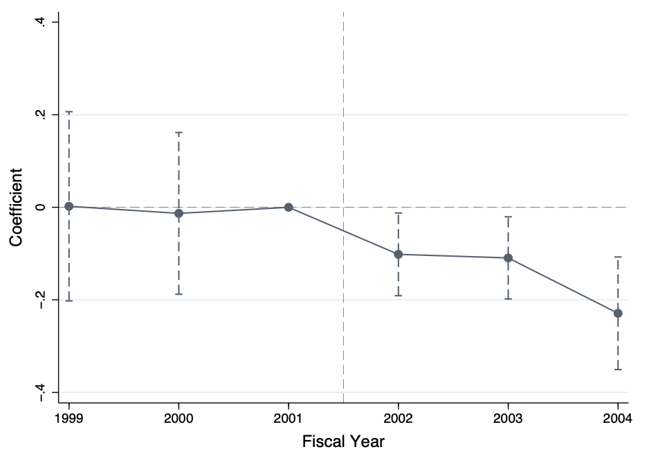
This figure shows the dynamic effect of audit market competition on the cost of bank loans over the sample period of 1999 through 2004. We plot coefficient estimates using dots, with fiscal years on the x-axis. The vertical sections above and below each dot represent 90% confidence intervals.
Estimating the Value of Auditing Services for Private Firms
With Edwige Cheynel, Lisa Liu, and Lijing Tong · 2025 · The Wharton School of the University of Pennsylvania Working Paper
Using voluntary audit decisions of Chinese private firms, we develop a dynamic model that considers the forward-looking behavior of clients and audit firms. Clients weigh the quality and fees offered by Big 10 and non-Big 10 auditors. Audits facilitate debt financing while deterring excessive debt. Counterfactual analyses suggest mandatory audits would impose small welfare losses, increase Big 10 market share, and have minimal effect on audit quality.
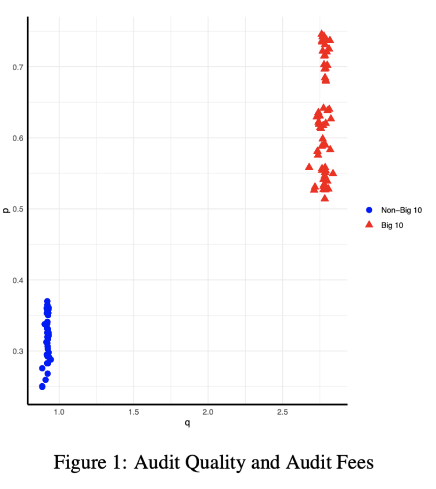
This table presents the distribution of audit quality (q) and audit fee (p) offered by Big 10 audit firms (solid triangles) and non-Big 10 audit firms (solid dots), respectively. The horizontal axis represents audit quality (q). The vertical axis represents audit fees (p), expressed in percentage points of total assets.
With Yuqing Zhou · 2020 · Journal of Accounting Research 58(1), 155–197
The lack of earnings guidance predicts an abnormal return of −41 basis points around the subsequent quarterly earnings announcement, suggesting investors do not fully incorporate the implications of nonguidance. Limitations in price efficiency, driven by limited attention and short-selling constraints, explain the mispricing and are associated with less guidance issuance.
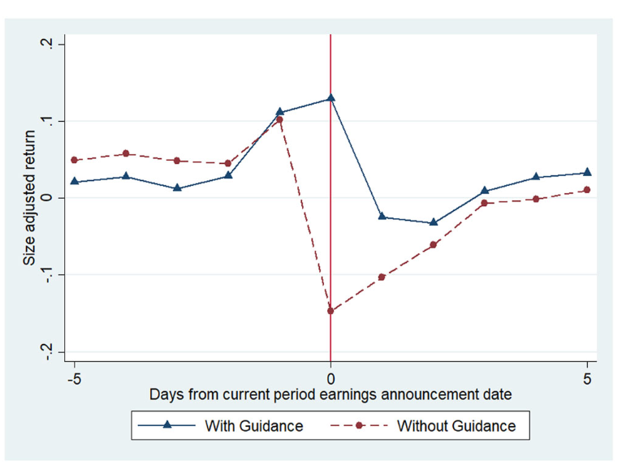
FIG. 3.—Daily size-adjusted returns around the earnings announcement date. This figure presents daily size-adjusted returns from five trading days before the quarter q earnings announcement date to five trading days afterward. The x-axis is days relative to the current quarter’s earnings announcement. The y-axis is daily size-adjusted returns. The dotted line represents firm quarters without management guidance (of any type) from one day prior to the quarter q−1 earnings announcement and one day prior to the quarter q earnings announcement. The solid triangle line represents firm quarters with management earnings guidance from one day prior to the quarter q−1 earnings announcement and one day prior to the quarter q earnings announcement.
With Jacquelyn Gillette and Delphine Samuels · 2020 · Journal of Accounting Research 58(3), 693–739
Using exogenous upgrades caused by Moody’s 2010 recalibration of its municipal ratings scale, we find that upgraded municipalities significantly reduce required continuing financial disclosures relative to unaffected municipalities. The results suggest higher credit ratings lower investor demand for disclosure and highlight the role of underwriters and direct regulatory enforcement when investor demand is low.
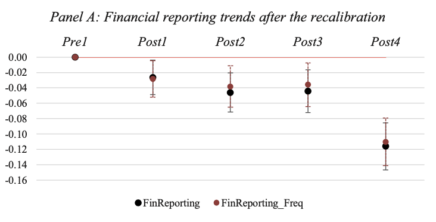
FIG. 2.—Trends around the ratings recalibration. This figure presents differences in FinReporting and FinReporting Freq (panel A) between our treatment and control groups around Moody’s recalibration, relative to our benchmark reporting period (2009= Pre1), where each reporting period runs from July 1–June 30. The difference-in-differences coefficients in panel A are reported.
With Paul Fischer and Chongho Kim · 2022 · Review of Accounting Studies 27, 1423–1456
We propose a measure of disagreement that reflects differences of opinion rather than information asymmetry and can be extracted from sequences of analyst forecasts. We validate the measure using predicted relations between disagreement, trading volume, and bid-ask spreads, then test associations between disagreement and expected returns.
With Ed deHaan and Nan Li · 2023 · Journal of Accounting Research 61(2), 571–617
We investigate whether firms’ public financial reports cause current employees to reevaluate their jobs and consider leaving. Job search increases significantly during earnings-announcement weeks, especially when employees are more mobile and their information frictions are greater. Employees use announcements to update expectations about their employers’ economic prospects.
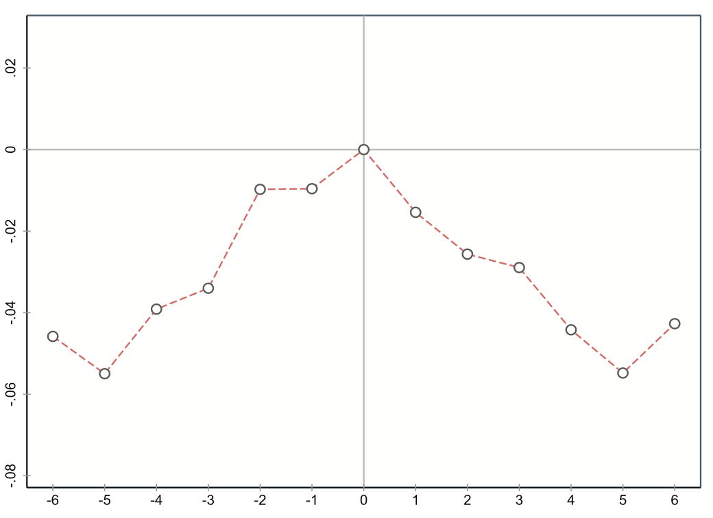
Fig. 2.—Review counts around earnings announcements (EAs). This figure plots the average weekly review counts relative to that of the EA week, where review counts are orthogonalized against firm-quarter fixed effects. A firm quarter must have at least 13 weeks to ensure that two adjacent quarters are comparable. The horizontal axis represents weeks relative to the EA week. The vertical axis represents average weekly review counts relative to that of the EA week.
With Heng (Griffin) Geng and Cheng Zhang · 2023 · The Accounting Review 98(6), 223–251
We present theory and evidence that greater financial reporting quality can incentivize myopic investments. Using Big N auditors’ acquisitions of non-Big Ns, we find acquired clients decrease intangible investments, especially when investor response to earnings increases more and shareholder horizons are shorter. The investment decrease is inefficient, as evidenced by reduced profitability and fewer exploratory innovations.
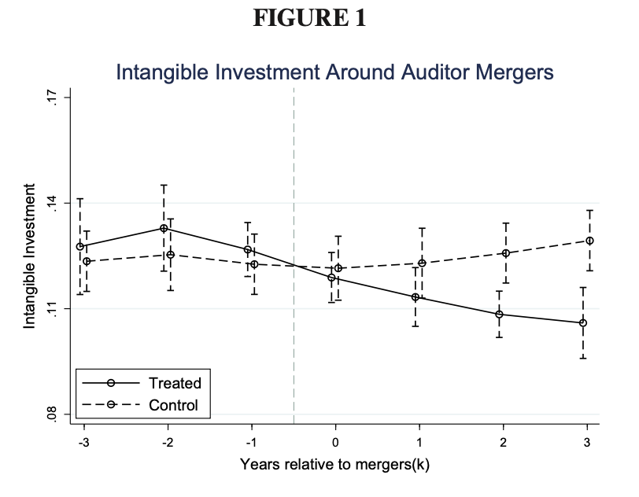
This figure shows the evolution of intangible investments around Big Ns’ acquisitions of non-Big Ns. Depicted in the solid (dashed) line is the mean intangible investment of treated (control) client firms in k years relative to the completion year of audit firm acquisitions. The vertical lines around each dot represent the 90 percent confidence intervals for the mean estimates.
With Yichang Liu and Joshua Madsen · 2025 · Journal of Accounting Research, forthcoming
We find that 40% of required hedge fund adviser disclosures omit operational and investment risk information found in other public sources. Funds with these inconsistencies have predictably lower performance but do not differ in fund flows, leverage, ownership structure, or fees, consistent with investors being subject to limited strategic thinking.
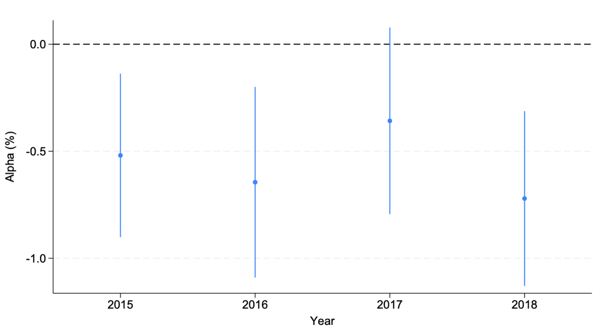
This figure plots the relation between Inconsistent:Any and fund performance by year for the sample period 2015--2018. The dependent variable is the Fung and Hsieh (2001, 2004) seven-factor alpha.
Asset Comovement and Competition for Price Efficiency: Theory and Evidence
With Cathy Schrand and Stella Park · 2025 · The Wharton School of the University of Pennsylvania Working Paper
This paper provides theory and evidence that the use of disclosure to increase price efficiency depends on how strongly firms comove with other firms. As comovement increases, firms increase disclosures to compete for investors and improve price and investment efficiency. Disclosures create negative externalities for peers competing for the same investors.
With Christopher Armstrong and Allison Nicoletti · 2022 · Journal of Financial Economics 146(1), 256–276
Using a control-function regression method that accounts for endogenous matching of banks and executives, we find that equity portfolio vega leads to systemic risk during subsequent economic contractions but not expansions. Vega encourages systemically risky policies, including lower common-equity capital ratios, more run-prone debt financing, and more procyclical investments.
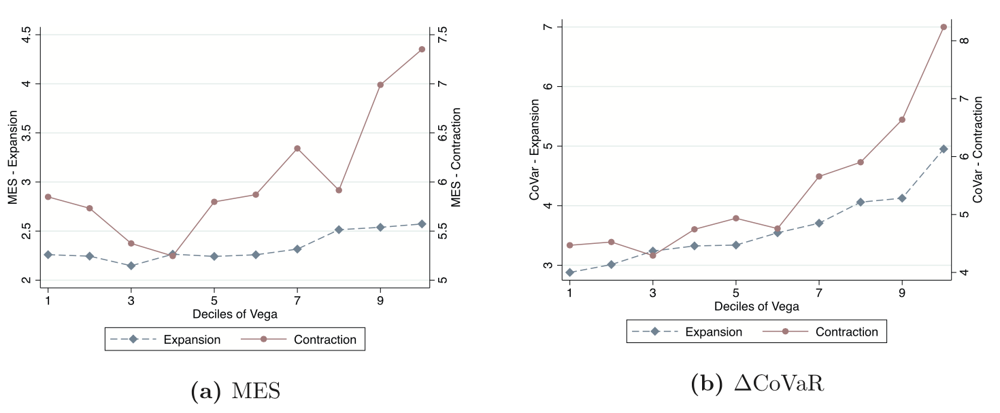
Fig. 3. Vega and systemic risk in expansions vs. contractions. In each panel, the vertical axis on the left presents the systemic risk measure during expansions (the dashed line with diamonds) and on the right presents the systemic risk measure during contractions (the solid line with circles). The horizontal axis represents the deciles of vega. Contraction years are classified as the years 2001, 2008, and 2009. The measurement of systemic risk leads the measurement of vega by one year.
With Zhihui Gu and Wei Sun · 2024 · Journal of Accounting Research 62(1), 181–228
Examining regional variation in China, we document that the influence of historical Confucian values persists and reduces minority shareholder expropriation in local public firms. The effect operates in part through stronger oversight mechanisms, including greater financial reporting quality and dividend payouts.
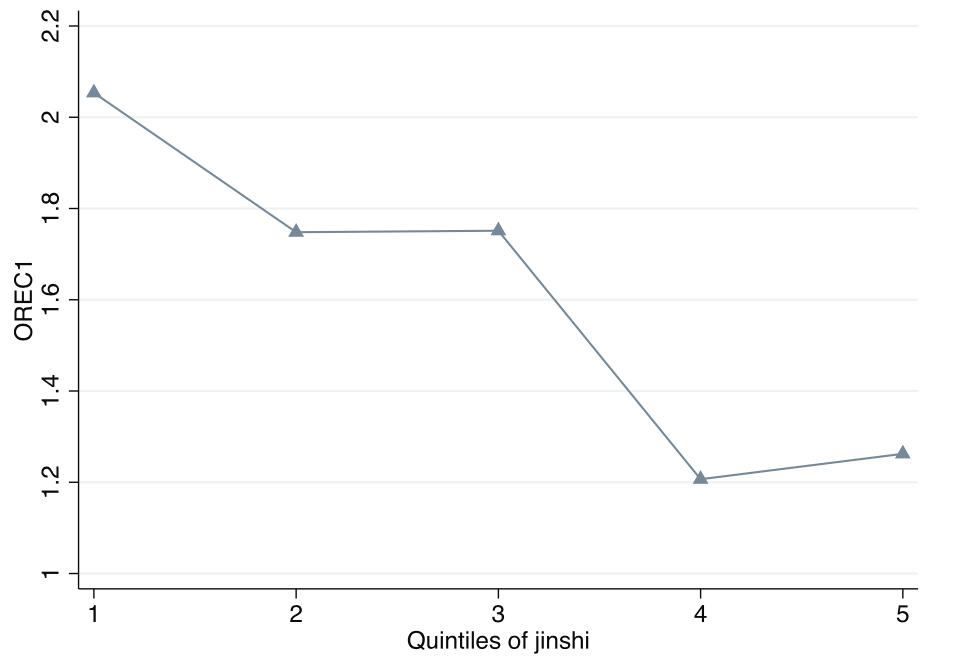
Fig. 2.—Jinshi and tunneling. This figure presents tunneling as a function of the number of Jinshi over a 50-km radius around a corporate headquarters. The horizontal axis presents the quintiles of the number of Jinshi. The vertical axis (the triangle-straight line) presents tunneling, OREC1, measured as the amount of other accounts receivable that relate to transactions with controlling shareholders as a percentage of total assets.
With Thomas Bourveau, Xingchao Gao, and Rongchen Li · 2025 · Journal of Accounting and Economics 79(2–3), 101756
We investigate a 2012 comply-or-explain regulation implemented by the Shanghai Stock Exchange. Firms subject to the regulation decreased tunneling whether they complied by paying dividends or by explaining. The reduction is partially attributable to enhanced regulatory monitoring of explaining firms and constraints on the excess cash of paying firms.
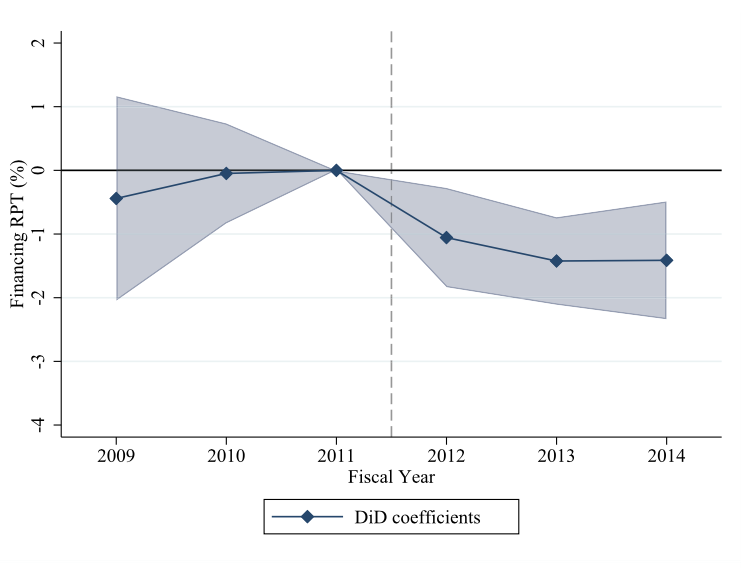
Fig. 3. Dynamic effects and trends on tunneling. This figure shows the dynamic treatment effects of the regulation and time trends on tunneling over the sample period of fiscal years 2009–2014. The dependent variable FinancingRPT is the amount of financing RPTs divided by total assets.